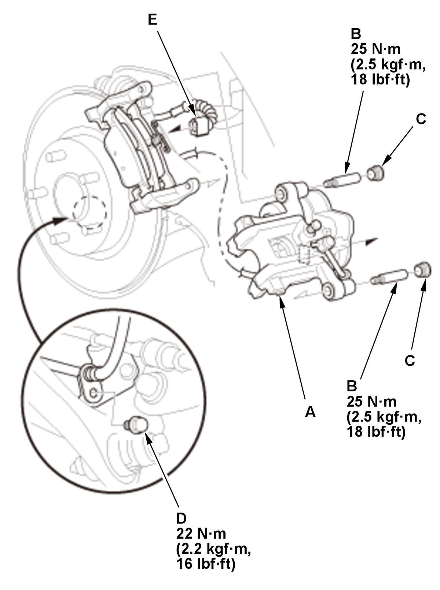
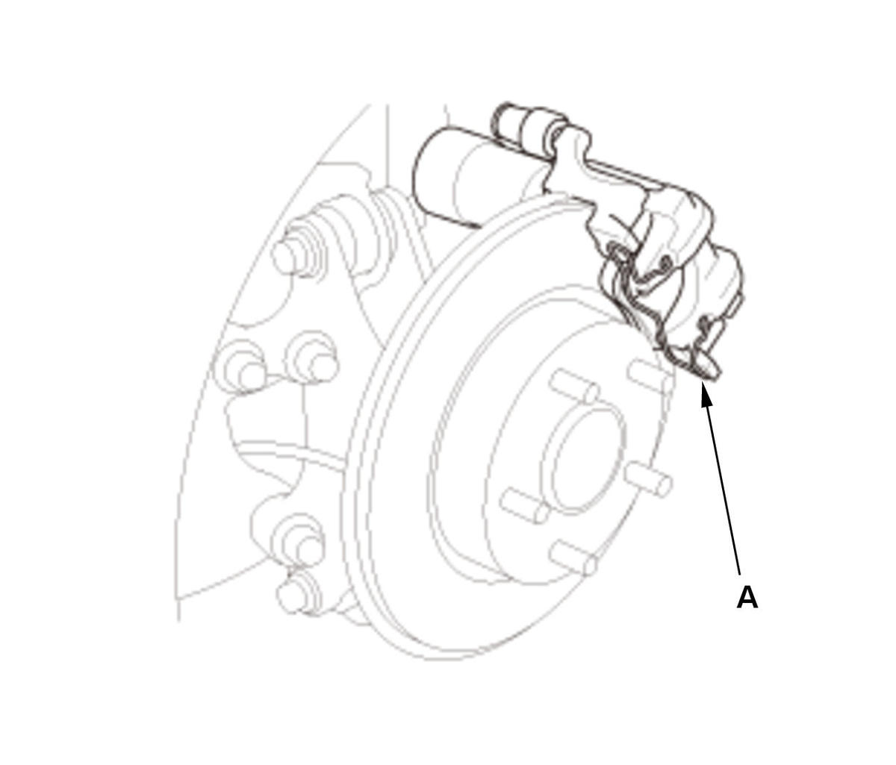

Rear Brake Pad Removal and Installation (2016 2017 2018 2019): Installation
NOTE: Review the Service Precautions before doing repairs or service .
- Brake Pad - Install
1. Install a commercially available brake caliper piston compressor tool (A) on the caliper body (B). 2. Press in the piston with the brake caliper piston compressor tool.
3. Remove the brake caliper piston compressor tool.
4. Install the brake pads (A) correctly, with the wear indicator (B) on the bottom inside position.
NOTE: If you are reusing the brake pads, always reinstall the brake pads in their original positions to prevent a temporary loss of braking efficiency.

Courtesy of HONDA, U.S.A., INC.HONDA, U.S.A., INC.5. Install the caliper body (A). 6. Install the pin bolts (B).
7. Install the caps (C).
8. Install the brake hose mounting bolt (D).
9. Connect the connector (E).
10. Install the housing clip (A). 11. Press the brake pedal several times to make sure the brakes work.
NOTE: Engagement may require a greater pedal stroke immediately after the brake pads have been replaced as a set. Several applications of the brake pedal will restore the normal pedal stroke.
- Brake Caliper Piston - Adjust
With using the HDS
1. Turn the vehicle to the ON mode.
2. Select the ADJUSTMENT from the ABS/TCS/VSA menu with the HDS, then enter the BACK TO NORMAL MODE from the BRAKE PAD MAINTENANCE MODE, and follow the screen prompts. Make sure THIS FUNCTION PROCEDURE IS FINISHED on the screen, then press the enter button.
3. Turn the vehicle to the OFF (LOCK) mode.
Without using the HDS
1. Install the electric parking brake actuator
2. Turn the vehicle to the ON mode.
3. Apply the parking brake, then release the parking brake.
4. Turn the vehicle to the OFF (LOCK) mode.
- Rear Wheels - Install
- Brake Fluid - Refill
1. Add brake fluid as needed.